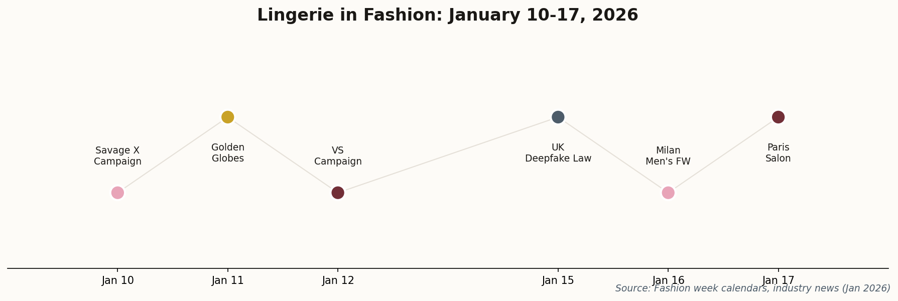
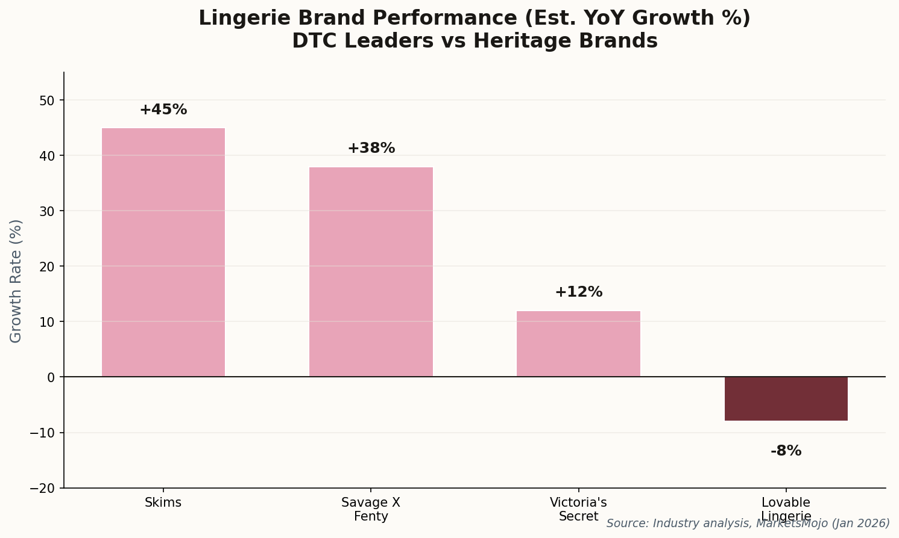
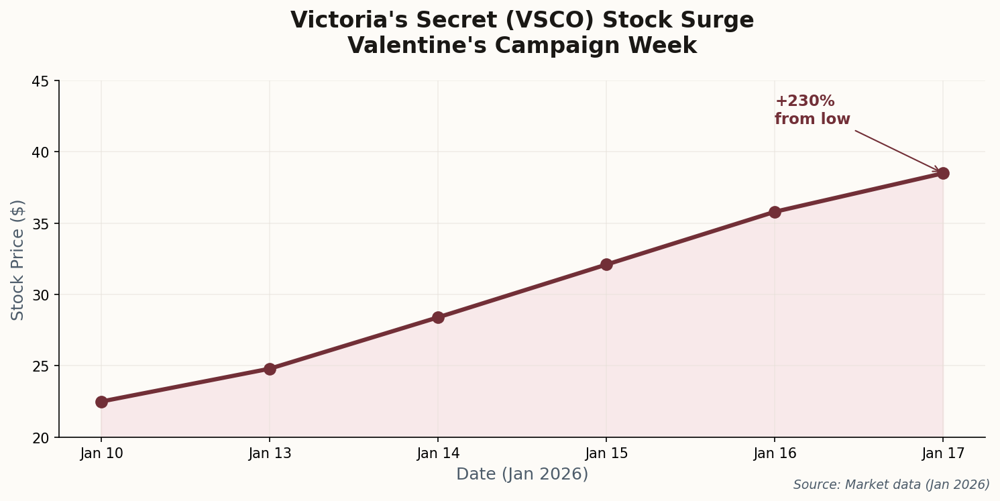

From Paris trade shows to Golden Globes red carpets, lingerie is having a moment. Valentine's campaigns are dominating social feeds, sheer fabrics are conquering menswear, and a new UK law is rewriting the rules on digital fashion. Here's what it all means.

A week of campaigns, runway shows, and regulatory shifts in the intimate apparel industry
01
Paris Opens the Salon: "Sensory Maximalism" Arrives
The Salon International de la Lingerie opened in Paris this week, and the buzzword on everyone's lips was "sensory maximalism." After years of minimalist designs and functional basics, the industry is pivoting hard toward touch, texture, and tactile luxury.
"A return to sensory experiences where touch and texture define the new luxury."
The major innovation on display: "technological laces"—AI-designed patterns that optimize both aesthetics and structural integrity. It sounds like buzzword soup, but the samples were genuinely striking: intricate designs that would be nearly impossible to produce manually, manufactured at scale.
The Interfilière sourcing expo highlighted bio-based materials as the other key trend. Sustainability isn't just a marketing angle anymore—it's a competitive requirement. Brands that can't demonstrate ethical sourcing are finding themselves locked out of premium retail channels.
Milan Men's Fashion Week F/W 2026 kicked off with Zegna, and by the time Dolce & Gabbana hit the runway on the 17th, the trend was unmistakable: menswear is borrowing heavily from intimate apparel aesthetics.
Sheer fabrics, fluid silhouettes, and what the industry is calling "translucent menswear" dominated early presentations. It's not just about showing skin—it's about softening the rigid structures that have defined men's fashion for a century.
"Reimagining classic menswear pieces... exploring themes of time and continuity."
The implications for the lingerie industry are significant. As "genderless intimates" gain traction in mainstream fashion, brands that can design across traditional categories will have a structural advantage. The binary division between "women's lingerie" and "men's underwear" is increasingly artificial.
New UK legislation that went into effect this week makes non-consensual intimate image generation a criminal offense. That's not surprising—what is surprising is how broadly the law is being applied to fashion marketing.
Major platforms including X (formerly Twitter) have already restricted their AI tools from generating images of real people in lingerie or revealing clothing. This directly impacts how digital fashion and virtual influencers can be marketed in the UK market.
"Restrictions... preventing users from generating images of real people in revealing clothing."
The precedent: This sets a global standard for "digital consent" in fashion. Brands that have been using AI-generated models for lingerie marketing will need to rethink their strategies—or face legal exposure in the UK and potentially other markets that follow suit.

The widening gap between celebrity-led DTC brands and struggling legacy labels
The Victoria's Secret "A Very VS Valentine's" campaign has been dominating social feeds since its January 7th launch, and the stock is reflecting it. VSCO shares have reportedly surged over 230% from recent lows, driven partly by this brand revitalization.

The Valentine's campaign coincided with a dramatic stock recovery
The campaign features Hailey Bieber, Isabeli Fontana, and Maty Fall Diba in visuals that explicitly reference iconic early-2000s VS imagery—including nods to Gisele Bündchen's legendary 2001 poses.
"Visuals referencing past iconic VS campaigns... featuring Hailey Bieber as the star."
After years of rebranding toward "inclusivity" and away from the Angels aesthetic, VS is betting that high-gloss fantasy lingerie is back in demand. The stock market seems to agree.
Rihanna'sSavage X Fenty dropped its "Love So Savage" Valentine's 2026 campaign this week, and it's generating more cultural buzz than any lingerie launch in years—not primarily because of the product, but because of the casting.
The campaign features Rihanna as Aphrodite alongside Vivian Wilson—Elon Musk's daughter—in her first major modeling role. The collection emphasizes "Sinful Rose" prints and inclusive sizing, maintaining the brand's disruptive market position.
"A modern ode to Aphrodite... emphasizing empowerment and individuality."
The casting choice is clearly strategic: Vivian Wilson's presence in a Rihanna campaign is a statement about progressive social values and a direct contrast to her father's public positions. Fashion has always been political, but rarely this explicitly.
The 2026 Golden Globes red carpet was a showcase for lingerie-inspired fashion at its most glamorous. Zoë Kravitz wore a sheer Saint Laurent slip dress that blurred the line between nightwear and couture. Sofía Vergara continued her signature corset-structured aesthetic. Nikki Glaser wore sequins that referenced classic boudoir styles.
"Sheer and lingerie-inspired fashion is a high-impact trend for January 2026."
Red carpet adoption is the final validation for any fashion trend. When the biggest stars in Hollywood choose to wear something, it signals to mass market consumers that the look is aspirational and acceptable. "Underwear as outerwear" has officially arrived.
The Big Picture
This week told two stories about the lingerie industry. The first is creative: intimate apparel is ascendant in high fashion, with sheer fabrics conquering men's runways, red carpets embracing boudoir aesthetics, and trade shows buzzing about tactile luxury and technological innovation.
The second story is economic. The gap between thriving celebrity-led DTC brands (Skims, Savage X Fenty) and struggling heritage labels (Lovable Lingerie hit a 52-week low this week) is widening into a chasm. Victoria's Secret's nostalgia play suggests even legacy brands can pivot—but only if they're willing to embrace the cultural moment rather than resist it.
And then there's the wildcard: regulation. The UK's deepfake law is just the beginning. As AI reshapes how fashion is marketed, the rules about consent, authenticity, and digital rights are being written in real time. Brands that get ahead of these shifts will have an advantage; those caught flat-footed will face expensive legal exposure.
Lingerie has always been about more than fabric. It's about identity, desire, and how we present ourselves—both to others and to the mirror. This week reminded us that in 2026, those questions are as commercially significant as ever.